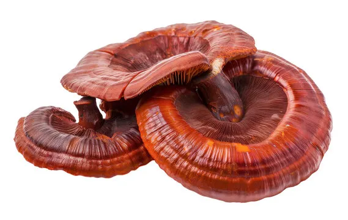

Reishi Mushroom
The Reishi mushroom (Ganoderma lucidum), also known as Lingzhi, is a polypore fungus celebrated for its medicinal properties. It has been used in traditional Asian medicine for over 2,000 years, believed to support vitality and longevity.
Today, Reishi is studied for potential immune-boosting benefits, though scientific evidence is still being developed. Its distinctive red, varnished appearance makes it easily recognizable in the wild.